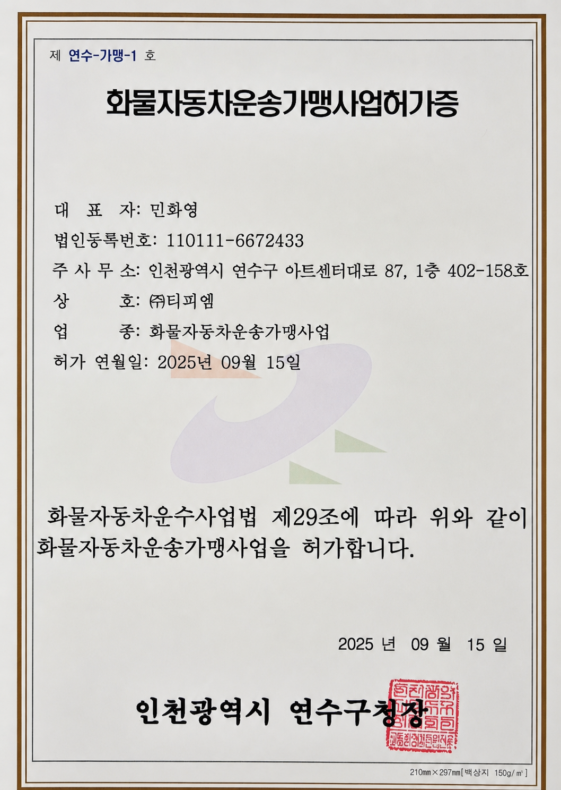

허가 사업의
운영 기반
화물자동차운송가맹사업 허가 취득을 뒷받침한 운송 플랫폼
LICENSED PLATFORMAX-POWERED LOGISTICS PLATFORM
Webtruck과 Webhouse의 현장 경험에 AX 기술을 결합해
화물·컨테이너
운송부터 창고 운영까지 지능적으로 연결합니다.
PROVEN IN THE FIELD
실제 물류 현장에서 축적한 업무 지식이 제품과 AX 전환의 출발점입니다.
화물자동차운송가맹사업 허가 취득을 뒷받침한 운송 플랫폼
LICENSED PLATFORM입고·재고·피킹·출고의 표준화와 실시간 가시성
WAREHOUSE CONTROL부피와 품목 특성을 반영해 개발하고 현재 운영 중인 WMS
LIVE OPERATION업무 지식은 보존하고 기술과 데이터 구조는 미래형으로 전환
CONTINUOUS EVOLUTIONONE LOGISTICS JOURNEY
운송 오더에서 배차·창고·정산·분석까지 끊어진 물류 데이터를 하나의 여정으로 연결합니다.
흩어진 주문을
한 체계로
조건에 맞는
차와 기사를
입고·재고·출고를
위치까지
운임과 수수료를
증빙으로
네 구간에 쌓인 데이터로 AI 가 근거와 후보를 냅니다. 결정은 담당자가 합니다.
실제 운영 시스템을 데모 계정에서 찍은 33초입니다.
보기 데이터입니다. 영상에 보이는 회사 이름·거래처·차량번호·담당자는 모두 데모용으로 만든 값이며, 고객사 자료가 아닙니다.
BUSINESS ONTOLOGY
「오더」가 무엇과 어떻게 이어지는지를 구조로 남깁니다. 그래야 사람 말로 물어도 답을 찾습니다.
AUTOMATION
반복되는 일은 로봇이 먼저 합니다. 사람은 확인하고 결정하는 자리에만 섭니다.
PRODUCT PORTFOLIO
제품 제목을 클릭하면 대상 업무, 핵심 기능과 AX 기반의 차별점을 자세히 확인할 수 있습니다.
화물 및 컨테이너 오더를 접수하고 차량·기사를 배차해 운행 상태와 운임 정산을 하나의 흐름으로 관리합니다. 화물자동차운송가맹사업 허가 취득을 뒷받침한 TPM Systems의 핵심 운영 플랫폼입니다.
배차 담당자 · 운송 관리자 · 가맹본부 · 가맹점 · 차주/기사 · 정산 담당자
운송 의뢰 접수 → 차량 조건 확인 → 배차/수락 → 상차·운행·하차 → 인수 확인 → 운임 확정·정산
화주·거래처, 차량·기사, 노선·운임표, 배차 이력, 운송 상태, 증빙, 미수·미지급과 가맹 수수료를 통합 관리합니다.
GPS·지도·세금계산서·회계 시스템과 연계해 전화와 수기 업무를 줄이고 배차 현황과 손익을 투명하게 만듭니다.
입고, 적치, 재고, 피킹, 검수, 출고 업무를 표준화하고 품목과 로케이션 단위의 재고를 가시화합니다. 운송 시스템과 연계해 창고 안팎의 흐름을 연결합니다.
센터 관리자 · 입출고 담당자 · 피커/검수자 · 재고 담당자 · 화주사 · 고객지원 담당자
입고 예정 → 검수·적치 → 재고/로케이션 관리 → 주문 할당 → 피킹·검수·포장 → 출고 확정
품목·바코드·로트, 가용/보류 재고, 로케이션, 입출고 작업, 재고 이동·조정·실사와 작업자별 이력을 관리합니다.
OMS·TMS·쇼핑몰·택배 시스템과 연결해 재고 정확도를 높이고 오출고와 탐색 시간, 반복 입력을 줄입니다.
일반 화물과 컨테이너 운송의 서로 다른 오더·차량·운임 규칙을 한 플랫폼에서 처리합니다. 운영 데이터를 학습 가능한 구조로 전환해 배차 판단과 예외 대응을 지원합니다.
통합 배차실 · 운송 관제팀 · 컨테이너 운영팀 · 원가/정산 담당자 · 경영 관리자
복합 오더 수집 → 운송 유형·제약 분석 → 배차 후보 추천 → 승인·실행 → 실시간 예외 대응 → 손익/KPI 분석
차종·거리·시간·공차·기사 이력과 운임 조건을 함께 분석해 배차 후보, 예상 지연과 수익성 판단을 지원합니다.
AI가 근거와 후보를 제시하고 담당자가 승인합니다. 결정 이력을 남겨 규칙을 지속 개선하며 기존 TMS와 단계적으로 병행할 수 있습니다.
고객·채널·거래처별 주문을 표준 오더로 통합하고 배정부터 진행·예외·완료까지 상태를 추적합니다. TMS와 WMS 사이에서 주문과 실행 데이터를 연결하는 물류 관제 허브입니다.
주문 운영팀 · 화주사 · 고객센터 · 창고/운송 담당자 · 채널 관리자 · 경영 관리자
채널별 주문 수집 → 표준화·검증 → 재고/센터 할당 → 출고·운송 지시 → 상태 통합 → 취소·반품·예외 처리
원주문과 분할 주문, 납기·우선순위, 주문 변경, 재고 할당, 출고/배송 상태와 클레임까지 하나의 이력으로 관리합니다.
쇼핑몰·ERP·WMS·TMS·고객센터를 연결해 채널마다 다른 주문을 표준화하고 누락·중복과 상태 문의를 줄입니다.
FREIGHT FRANCHISE NETWORK
Webtruck은 가맹본부·가맹점·화주·차량을 연결해 화물운송가맹사업의 운영 전 과정을 체계화합니다.
화주와 가맹점의 화물 정보 및 운송 조건을 표준화해 접수합니다.
조건에 맞는 차량과 기사를 배정하고 운송 오더를 전달합니다.
GPS 기반 위치와 배송 상태를 확인하고 예외 상황에 대응합니다.
가맹점별 매출, 수수료와 정산 내역을 투명하게 관리합니다.
OPERATIONS CONTROL
AX EVOLUTION
현장에 맞춘 직접 개발 구조를 바탕으로 필요한 기능을 지속 확장합니다.
거리, 차량 조건과 운행 이력을 반영한 배차 후보 추천
GPS와 교통 정보를 활용한 효율적 경로 계획 및 조정
운송 지연과 정산 예외를 감지해 담당자의 대응 지원
정산, 보고서와 반복 업무의 단계적 자동화
LICENSED BUSINESS
TPM Systems는 Webtruck을 기반으로 화물자동차운송가맹사업 운영 체계를 구축하고 2025년 9월 15일 사업 허가를 취득했습니다.

허가증 크게 보기 ↗SUCCESS STORY
범용 기능을 강요하지 않고 현장의 업무 흐름을 제품에 반영합니다. 가구 홈쇼핑 창고와 수출입 컨테이너 운송 — 현장이 다르면 화면도 다르게 만듭니다.
대형·다품목 가구의 입고, 위치, 재고, 출고 흐름을 현장 기준으로 설계했습니다. 개발 이후에도 실제 운영 데이터를 바탕으로 TPM Systems와 함께 기능을 개선합니다.
내수 LCL 과 수출입 FCL 오더를 한 시스템에서 받고 AI 배차판으로 차를 붙입니다. 기사·화주·경영진이 쓰는 앱 셋은 웹 화면을 그대로 쓰는 하이브리드라, 서버가 바뀌면 앱을 다시 깔지 않아도 화면이 함께 바뀝니다.
BUILT SYSTEMS
운송과 창고에서 쓰던 설계를 제조·유통·커머스 현장에도 그대로 적용했습니다.
운영 중인 것과 내부 검증 단계가 함께 있습니다. 고객사 이름은 적지 않습니다.
WHY TPM SYSTEMS
TPM의 물류 운영 지식과 AX 개발 역량이 한 팀으로 제품을 만듭니다.
현재 시스템을 멈추지 않고 우선순위에 따라 단계적으로 현대화합니다.
흩어진 업무 데이터와 규칙을 연결 가능한 구조와 온톨로지로 전환합니다.
반복 업무는 에이전트가 수행하고 중요한 결정은 사람이 승인합니다.
CONTINUOUS MODERNIZATION
오래된 TMS·WMS·OMS를 한 번에 폐기하지 않습니다. 독립적으로 완결되는 업무 모듈부터 옮기고, 신·구 결과가 같다는 것을 확인한 뒤 전환합니다.
만든 사람이 퇴사했고 문서와 업무 정의가 남아 있지 않습니다.
실행 중인 화면은 있지만 내부 구조와 데이터 관계를 알기 어렵습니다.
배차·출고·정산은 하루만 중단되어도 현장과 고객에게 바로 영향을 줍니다.
한 번에 바꾸는 비용과 기간, 전환일에 집중되는 위험을 감당하기 어렵습니다.
MODULE BY MODULE
재고 조회와 보정, 오더 접수와 배차처럼 독립적으로 끝까지 수행할 수 있는 단위를 선정합니다. 기존 시스템과 연결 지점이 적고 효과를 측정할 수 있는 업무부터 시작합니다.
화면·데이터·연계를 조사하고 먼저 옮길 업무 모듈을 정합니다.
소스 또는 실제 화면과 응답 데이터에서 규칙과 관계를 복원합니다.
공통 기능은 재사용하고 TPM 물류 업무만 현대적 구조로 재설계합니다.
같은 입력과 조건으로 건수·합계·저장 결과와 오류 처리를 비교합니다.
롤백 경로를 확보한 뒤 전환하고 효과를 확인해 다음 모듈을 정합니다.
THREE COMPLETION GATES
현재 시스템의 업무 지식은 보존하고, 데이터 구조와 사용자 경험은 AX 시대에 맞게 전환합니다.